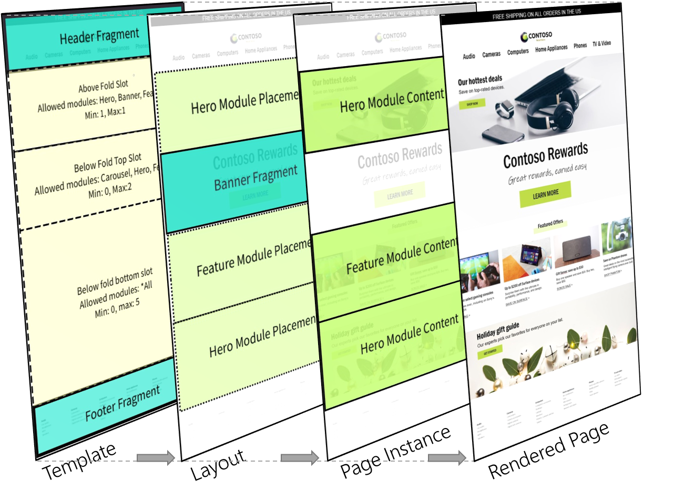

Übersicht über Vorlagen und Layouts
Important
Dynamics 365 Retail ist jetzt Dynamics 365 Commerce und bietet umfassende Handelsfunktionen für alle Kanäle – von E-Commerce über Shops bis hin zu Callcentern. Weitere Informationen zu diesen Änderungen finden Sie unter Microsoft Dynamics 365 Commerce.
Vorlagen sind ein grundlegendes Element des Microsoft Dynamics 365 Commerce-Seitenmodells. Wenn Sie die Effizienz und Konsistenz Ihrer Workflows für das Erstellen von Websites maximieren möchten, ist es wichtig, dass Sie lernen, wie Sie die Vorteile von Vorlagen für Ihre Website nutzen. Frühzeitige Entscheidungen über die Vorlagenstruktur sind wichtig und können die Kosten und Flexibilität für tägliche, saisonale und standortweite Markenaktualisierungen erheblich beeinträchtigen. Gut strukturierte Vorlagen bieten noch weitere Vorteile. Sie tragen beispielsweise dazu bei, die SEO-Werte (Suchmaschinenoptimierung) für die gesamte Website zu verbessern und die Anzahl der Fehler zu minimieren.
Ein guter Einstieg in die Arbeit mit Vorlagen besteht darin, die funktionalen Vorteile von Vorlagen und Layouts, die Unterschiede zwischen ihnen und die Hierarchie zu verstehen.
Die folgende Abbildung zeigt die Seitenmodellhierarchie hinter einer gerenderten Webseite.

| Entität | Grundfunktion |
|---|---|
| Vorlage | Vorlagen definieren die Moduloptionen und das Grundgerüst für eine Reihe von Layouts und Seiteninstanzen. |
| Layout | Layouts definieren die endgültige Auswahl und Anordnung von Modulen für eine Seite oder eine Gruppe von Seiten. |
| Seiteninstanz | Seiteninstanzen definieren die Daten und Inhalte für bestimmte Seiten. |
Vorlagen
Vorlagen befinden sich oben im Dynamics 365 Commerce-Seitenmodell und stellen einen wichtigen vorzeitigen Schritt für die Site-Konfiguration dar. Konzeptionell helfen Vorlagen dabei, die Konsistenz über eine Familie von untergeordneten Layouts und Seiten hinweg zu steuern, indem sie die Basisstruktur und die Authoring-Optionen für nachgelagerte Layouterstellungs- und Seitenerstellungsworkflows definieren. Vorlagen können durch vordefinierte, zentral verwaltete Elemente (z. B. Kopf- und Fußzeilen) und geführte Authoring-Flows zur Vereinfachung des Inhaltserstellungsprozesses beitragen, um sicherzustellen, dass die Modulkonfigurationsoptionen markenbezogen sind.
Steuern der Konsistenz
Wenn Sie eine Vorlage entwerfen, müssen Sie als wichtigste geschäftliche Entscheidung festlegen, wie viel Kontrolle die Vorlage über den Seitenerstellungsprozess haben soll. Eine Vorlage, die alles für einen nachgeschalteten Autor offen lässt, ist der am einfachsten zu erstellende Vorlagentyp, kann jedoch langfristige Konsequenzen für die Pflege der daraus erstellten Seiten haben. Eine gut geschriebene Vorlage bietet Anleitungen und eine optimierte Autorenerfahrung, bietet den Autoren jedoch auch genügend Flexibilität, damit sie ihre Aufgabe erledigen können. All diese Aspekte hängen von der Kontrolle ab, die die Vorlage erzwingt.
Mithilfe von Vorlagen können Inhaltsautoren effizienter arbeiten und auf folgende Weise markenbezogen arbeiten:
- Begrenzen der Module, die auf einer Seite verwendet werden können
- Vorschlagen von Standardmodulen und Konfigurationsoptionen
- Explizite Auswahl einiger Modul- und Konfigurationsoptionen, die auf Vorlagenebene gesteuert werden Dieser Prozess ist auch als das Sperren einer Einstellung bekannt.
Das folgende Beispiel zeigt, wie eine Basisvorlage (Vorlage X) konfiguriert werden kann:
- Alle untergeordneten Layouts der Vorlage X müssen über einen Kopf-Container, einen Text-Container und einen Fußzeilen-Container verfügen.
- In Vorlage X ist die Konfiguration des Kopf-Containers gesperrt und kann nur in Vorlage X selbst geändert werden. Alle untergeordneten Layouts und Seiten haben immer diesen Kopf.
- Der Text-Container benötigt mindestens ein Modul und maximal zehn Module. Diese Module werden durch nachgelagerte Layouts und Seiten definiert.
- Für den Text-Container stehen die Module Hero, Feature, Karussell und Banner zur Verfügung.
- In Vorlage X ist ein Fußzeilencontainer konfiguriert, der jedoch von nachfolgenden Layouts und Seiten überschrieben werden kann.
Die Vorlage in diesem Beispiel definiert eine einfache Struktur und eine Reihe von Optionen für nachgeschaltete Inhaltsautoren. Beachten Sie, dass einige Teile einer Seite (in diesem Fall der Kopf) vollständig in der Vorlage definiert und gesperrt sind und von nachgeschalteten Autoren nicht geändert werden können. Andere Teile (in diesem Fall der Text) können von nachgeschalteten Autoren innerhalb bestimmter Richtlinien definiert werden (in diesem Fall eine Mindestanzahl und eine Höchstanzahl von Modulen bestimmter Typen). Andere Teile (in diesem Fall die Fußzeile) sind in der Vorlage definiert, können jedoch von nachgeschalteten Autoren überschrieben werden.
Ein wichtiger erster Schritt für Site- und Markenadministratoren besteht darin, das richtige Gleichgewicht zwischen Einschränkungen und Flexibilität für untergeordnete Layout- und Seitenautoren zu ermitteln. Wenn Vorlagen verwendet werden, ist dieses Gleichgewicht vollständig konfigurierbar. Dies wirkt sich darauf aus, ob Seitenelemente zentral aktualisiert (in der Vorlage gesperrt) oder auf einzelne untergeordnete Ebenen, die in der Seitenhierarchie niedriger sind, übertragen werden.
Um mit der Verwendung von Vorlagen zu starten, lesen Sie Mit Vorlagen arbeiten.
Layouts
Layouts sind die nächste Ebene in der Seitenmodellhierarchie unter Vorlagen. Während eine Vorlage alle Module definiert, die für eine Seite zulässig sind, ist ein Layout eine explizite Auswahl und Anordnung von Modulen. Seiten sind die nächste Ebene in der Seitenmodellhierarchie unter Layouts. Sie definieren den lokalisierten Inhalt für die im Layout ausgewählten Module.
Das folgende Beispiel baut auf dem Vorlagenbeispiel aus dem vorherigen Abschnitt auf und zeigt, wie ein Basislayout konfiguriert werden kann:
Die übergeordnete Vorlage des Layouts erfordert, dass der Text-Container zwischen einem und zehn Modulen enthält. Diese Module können nur Hero-, Feature-, Karussell- und Bannermodule sein. Daher kann das Layout die folgende Auswahl und Anordnung von Modulen definieren:
- Das erste Modul im Text-Container ist ein Banner-Modul, gefolgt von einem Hero-Modul und zwei Feature-Modulen.
- Das erste Funktionsmodul ist linksbündig und das zweite Funktionsmodul ist rechtsbündig.
Obwohl eine Standardfußzeile von der übergeordneten Vorlage geerbt wird, hat der Vorlagenautor die Fußzeile nicht gesperrt. Daher kann das Layout es überschreiben, indem ein anderes Fußzeilenfragment definiert wird.
Das Layout in diesem Beispiel definiert die endgültige Anordnung der Module für untergeordnete Seiten. Wie eine Vorlage kann ein Layout Standard- oder gesperrte Moduleigenschaften definieren, die immer von untergeordneten Seiten übernommen werden (z. B. die Ausrichtung der Feature-Module). Der tatsächliche Inhalt oder die tatsächlichen Daten für jedes Modul im Layout werden dann in jeder untergeordneten Seiteninstanz weiter unten in der Hierarchie definiert. Ein wichtiger Unterschied hierbei ist, dass Layouts keinen direkt lokalisierbaren Inhalt enthalten, während dies auf ihren untergeordneten Seiten der Fall ist. Die Hauptfunktion des Layouts besteht darin, die endgültige Anordnung und Standardkonfiguration der Module für die untergeordneten Seiten zu definieren.
Die Hierarchie ist aus zwei Gründen leistungsstark. Erstens werden Layouts, die dieselbe übergeordnete Vorlage verwenden, als kompatibel für Layoutwechsel-Szenarien behandelt. Daher kann das Layout für jede Seite in ein anderes Layout aus derselben Vorlagenhierarchie geändert werden, ohne dass der Inhalt auf Seitenebene erneut autorisiert werden muss. Mit dieser Funktion können Sie saisonale Entwurfsaktualisierungen durchführen, experimentieren oder eine permanente Neugestaltung der Website durchführen. Zweitens bieten Layouts eine weitere Möglichkeit, gemeinsam genutzte Elemente für eine Gruppe von Seiten zentral zu ändern, ohne dass Aktualisierungen einzelner Seiten erforderlich sind. Wenn eine Produktkategorie beispielsweise 1.000 Seiten enthält, die dasselbe Layout aufweisen, können die Module im Layout neu angeordnet werden, und diese Änderung wirkt sich sofort auf alle 1.000 untergeordneten Seiten aus.
Wenn Sie diese Hierarchie verstehen, können Sie eine agile und effiziente Websitestruktur bereitstellen, die Kosten spart, skalierbar ist und mit der Zeit bessere Ergebnisse erzielt.
Vordefinierte und benutzerdefinierte Layouts
Layouts auf Ihrer Site können entweder vordefiniert oder benutzerdefiniert sein:
- Vordefinierte Layouts ermöglichen einen Workflow für die Seitenerstellung, bei dem alle Module bereits ausgewählt und angeordnet sind und nur Dateneingaben erforderlich sind. Dieser Ansatz kann Zeit sparen, wenn viele Seiten mit denselben Layoutanforderungen erstellt werden müssen. Vorgegebene Layouts haben eine 1:n-Beziehung zu ihren untergeordneten Seiten. Daher kann ein einzelnes vordefiniertes Layout verwendet werden, um die Modulanordnung für Hunderte oder Tausende von untergeordneten Seiten zentral zu steuern.
- Benutzerdefinierte Layouts sind im Wesentlichen Einweglayouts, die in eine Seite eingebettet sind. Sie werden nicht als Option angezeigt, wenn andere neue Seiten erstellt werden oder wenn das Layout geändert wird. Der Vorteil dieses Ansatzes besteht darin, dass ein Autor experimentieren kann, indem er eine Seite erstellt, die ein benutzerdefiniertes Layout verwendet. Wenn der Autor das Layout für andere Seiten wiederverwenden möchte, kann es problemlos in ein vordefiniertes Layout konvertiert werden. Das neue vordefinierte Layout wird dann als Option in Seitenerstellungsworkflows und in Layoutwechselszenarien für Seiten aus derselben Vorlagenhierarchie angezeigt. Umgekehrt können vordefinierte Layouts in benutzerdefinierte Layouts verzweigt werden. Auf diese Weise kann ein Autor eine Seite vom vordefinierten Layout trennen und ein neues benutzerdefiniertes Layout für den einmaligen Gebrauch erstellen. (Dieses neue benutzerdefinierte Layout ist weiterhin an alle Einschränkungen in der übergeordneten Vorlage gebunden.)
Vordefinierte und benutzerdefinierte Layouts werden in verschiedenen Teilen des Authoring-Toolset bearbeitet. Da benutzerdefinierte Layouts keine Abhängigkeiten zu anderen Seiten aufweisen, werden sie direkt im Seiteneditor bearbeitet. In diesem Fall ist das Vorhandensein eines Layouts für den Benutzer größtenteils transparent und wird nur in den Eigenschaften auf Seitenebene und über die Aktionen für Layoutoptionen angezeigt. Da sich Änderungen an vordefinierten Layouts auf viele untergeordnete Seiten auswirken können, müssen sie im Layout-Editor bearbeitet werden. Bei Veröffentlichungsaktionen werden die vollständigen Auswirkungen auf untergeordnete Seiten berücksichtigt.
Die folgenden Abbildungen zeigen Szenarien für vordefinierte und benutzerdefinierte Layouts.

Um mit der Verwendung von vordefinierten Layouts zu starten, lesen Sie Arbeiten mit Voreinstellungslayouts.